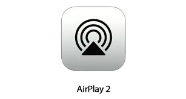

Du sol au plafond et d’un mur à l’autre,
un son harmonieux dans toute la pièce.
Avec la perception spatiale, le HomePod analyse l’acoustique et règle le son en fonction de sa propre position. Le tout, de façon automatique. Le son direct, y compris les voix et instruments principaux, est dirigé vers le centre de la pièce, tandis que le son ambiant est diffusé dans les canaux gauche et droit, et renvoyé par le mur.
Duo stéréo.
Votre son prend une nouvelle dimension.
Chaque HomePod détecte automatiquement son emplacement dans la pièce et règle précisément la musique en accord avec l’autre, dès le premier morceau joué. Non seulement une paire stéréo de HomePod crée un son qui emplit davantage la pièce, mais elle fournit une excellente extension dans les graves, avec une reproduction plus profonde et plus précise des basses fréquences.

AirPlay 2.
Jouez votre musique dans toute la maison, depuis une même pièce.
Lorsque vous placez des HomePod dans plusieurs pièces, les enceintes communiquent entre elles via AirPlay. Vous pouvez donc demander à Siri de jouer du jazz dans le salon et la bande originale de Vaiana dans la chambre des enfants, ou de diffuser le même morceau dans toute la maison, de là où vous êtes à cet instant. Votre musique peut également vous suivre à mesure que vous évoluez dans la maison : il suffit de demander à Siri de déplacer le morceau d’un HomePod à l’autre. Ainsi, vous ne manquerez pas la moindre mesure. Avec le HomePod, vous pouvez aussi contrôler n’importe quelles enceintes compatibles AirPlay 2, au seul son de votre voix.
Il connaît la musique.
Le HomePod est l’écrin idéal pour l’immense répertoire d’Apple Music1. Avec l’intelligence de siri et l’accès à plus de 50 millions de morceaux, il apprend vos goûts et vous aide à faire des découvertes qui élargiront votre horizon musical. Voilà qui est inouï, au sens propre du terme.
50 millions de morceaux qui n’ont jamais sonné aussi bien.
Apple Music vous donne accès à pratiquement tous les morceaux possibles et imaginables. Écoutez en streaming tout ce qui figure à notre catalogue en plus de la musique de votre bibliothèque iTunes. Quant à vos amis, il leur suffit de se connecter à votre réseau Wi‑Fi pour diffuser leur musique en streaming directement sur votre HomePod. Vous n’avez pas d’abonnement Apple Music ? Profitez de trois mois d’essai gratuit. Vous pouvez résilier à tout moment.
En savoir plus sur apple music
Il apprend à connaître la musique que vous aimez.
Et joue la musique que vous allez adorer.
Dès que vous entendez un morceau qui vous plaît, dites « Dis Siri, j’aime bien ce morceau ». Au contraire, si vous n’appréciez pas un morceau ou un genre spécifique, vous pouvez par exemple dire à Siri « Dis Siri, je n’aime pas trop la musique électro. ». Plus vous parlez au HomePod, plus Apple Music connaît vos goûts musicaux. Ce qui signifie que vous pouvez aussi vous contenter de dire « Dis Siri, mets quelque chose qui va me plaire » pour écouter vos morceaux favoris et faire des découvertes similaires.